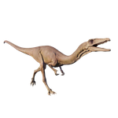

Useful Website
The small theropod Coelophysis is one of the earliest dinosaurs to have walked the earth, dating back 190-225m years to the Triassic period. Its name translates to ‘hollow form’ in reference to its hollow leg bones, which allow it to reach speeds of up to 25mph thanks to its light frame. Coelophysis is a carnivore and uses its sharp teeth and talons to catch its prey.
